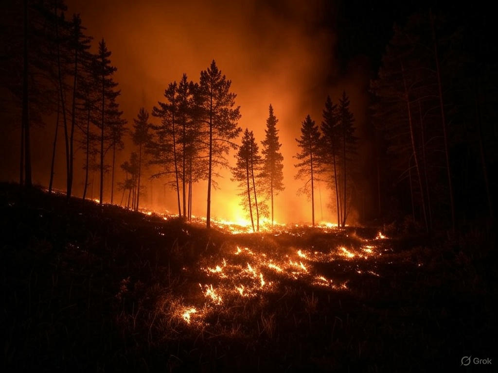
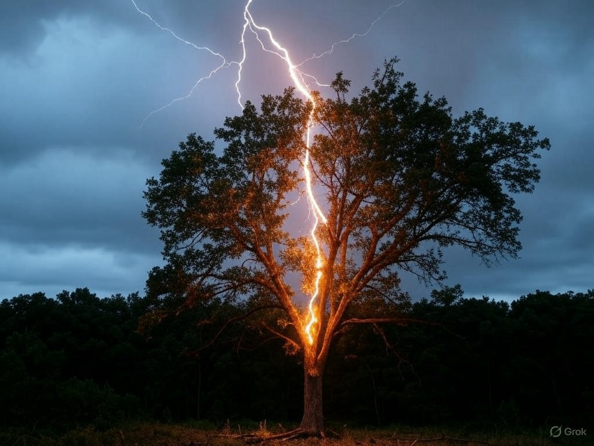
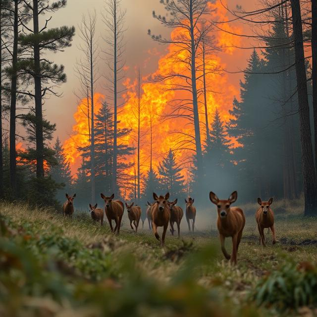
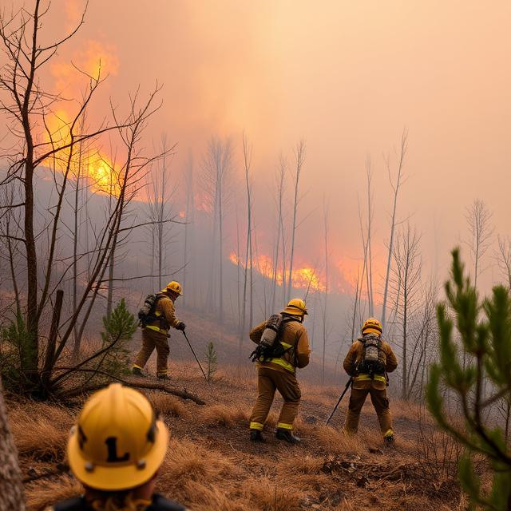

Forest Fires: A Growing Threat

What is Forest Fires?
A forest fire, also known as a wildfire, is an uncontrolled fire that spreads rapidly through forests, grasslands, and other wildland areas. These fires can start naturally, often due to lightning strikes, or be caused by human activities such as unattended campfires, discarded cigarettes, or arson.
What Causes Forest Fires?

Natural Causes: Lightning strikes are a common natural cause of forest fires, particularly in dry and lightning-prone regions.
Human Activities: Careless human behavior is the leading cause of wildfires globally, including unattended campfires, discarded cigarettes, and arson.
Climate Change: Rising temperatures, prolonged droughts, and changes in precipitation patterns create drier conditions that make forests more susceptible to fires.
The Impacts of Forest Fires

Environmental Damage: Wildfires destroy vast areas of forest, impacting wildlife habitats and releasing greenhouse gases into the atmosphere.
Economic Losses: They cause significant economic damage by destroying timber resources, infrastructure, and property.
Human Health: Smoke from wildfires contains harmful pollutants that can cause respiratory problems and other health effects.
What Can Be Done?

Prevention: Educating the public about fire safety and implementing fire restrictions during dry periods can help reduce human-caused fires.
Early Detection: Investing in fire detection systems and maintaining trained firefighting crews can help contain fires before they spread.
Forest Management: Sustainable practices like prescribed burns and thinning can reduce the fuel available for wildfires.
Climate Action: Reducing greenhouse gas emissions is crucial to mitigating the long-term risk of intense wildfires.